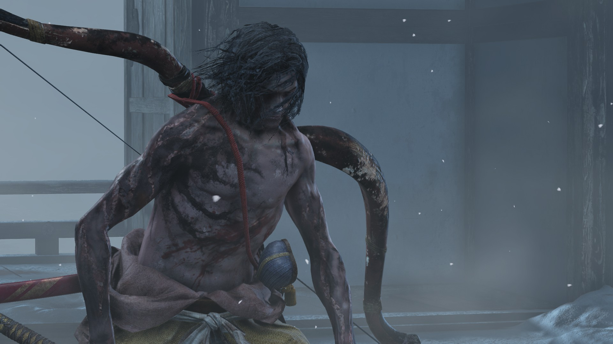
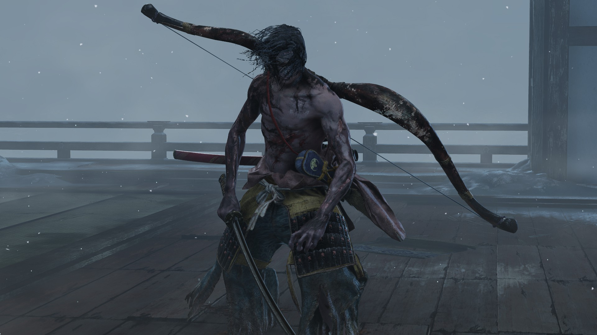
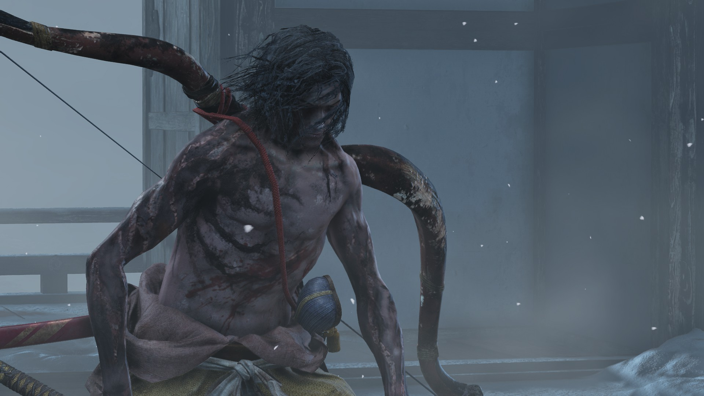
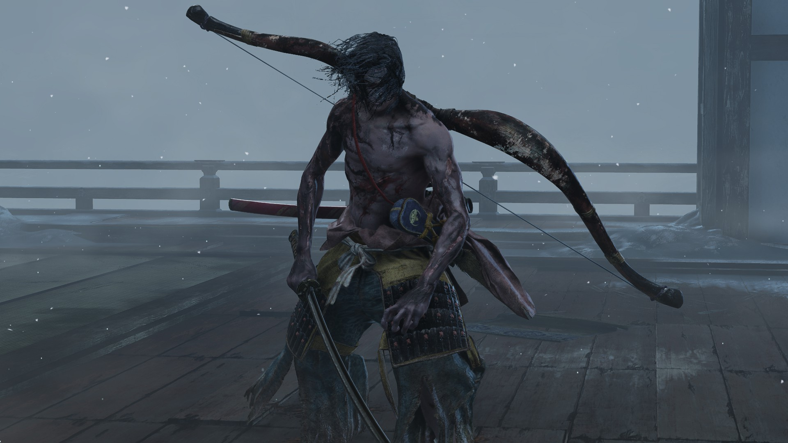

Genichiro Ashina
Guia do Chefe
Genichiro Ashina (葦名弦一郎) é o herdeiro adotivo de Isshin e o rosto da resistência contra o Ministério Interior. Segundo o guia da Fextralife, o objetivo dele é tomar o Sangue do Dragão de Kuro para salvar sua terra, o que o leva a enfrentar Lobo mais de uma vez.
O confronto principal acontece no topo do Castelo Ashina e se divide em duas fases tradicionais e uma terceira forma, “Modo Tomoe”, que adiciona relâmpagos e pressiona o jogador com golpes de espada mais velozes.
Localização de Genichiro
Onde ele aparece?
- Reservatório de Ashina (prólogo): luta inevitável destinada à derrota do jogador para avançar a história.
- Castelo Ashina – Torre Superior: após vencer Ashina Elite Jinsuke Saze, suba ao telhado para iniciar o duelo decisivo.
- Após duas barras, ele se transforma em Genichiro, Caminho de Tomoe. A luta completa não é opcional se você estiver seguindo Kuro.
Recompensas
O que cai ao derrotá-lo?
- Memória: Genichiro (aumenta o poder de ataque).
- Ninjutsu Manto de Sangue (Bloodsmoke), liberando finalizações furtivas em sequência.
- Experiência: 2.000 / 18.000 / 27.000 (NG / NG+ / NG+2) conforme a tabela do wiki.
Estratégia recomendada
Fases 1 e 2 – Mestre da postura
Fique colado em Genichiro para forçar o loop de deflexões. Sempre responda aos tiros de arco com um passo lateral seguido de dois golpes para ganhar vida e postura. Quando ele saltar e surgir o kanji vermelho, esteja pronto para Mikiri (estocada) ou salto (varrida). Use Firecrackers para reiniciar a pressão e encaixar Ichimonji Duplo.
Após a primeira barra, ele passa a usar mais combos de arco de curto alcance. Defletir cada flecha gera enorme dano de postura nele; curas provocam um disparo carregado, então role imediatamente após beber a cabaça.
Fase final – Caminho de Tomoe
Genichiro abre com uma estocada saltando. Faça Mikiri, bata e recule para preparar o Lightning Reversal. Quando ele levantar a katana acima da cabeça e eletricidade envolver o corpo, espere o relâmpago acertar no ar, pule e devolva com o ataque para zera-lo de postura rapidamente, exatamente como sugerido no guia oficial.
Continue alternando deflexões e Shadowrush/Ichimonji. Uma sequência eficaz é Firecracker → dois cortes → Ichimonji. Repetir isso abaixo de 50% de vida garante o stagger decisivo.
Ataques e Estratégia
| Ataque | Contra-ataque / Estratégia |
|---|---|
| Rajada de flechas + corte | Desvie lateralmente do disparo e golpeie antes que a espada saia da bainha. Se longe, bloqueie e aproxime. |
| Combo de três cortes | Defleta em sequência; o terceiro golpe sempre abre brecha para Ichimonji ou Loaded Axe, causando alto dano de postura. |
| Estocada perigosa | Execute Mikiri Counter para encher a barra dele e ganhar vantagem. Evite rolar, pois ele rastreia o movimento. |
| Varrida baixa com pulo | Salte sobre a lâmina e use o stomp na cabeça para causar dano extra de postura. |
| Lightning Slash (Tomoe) | Pule assim que ele erguer a espada, absorva a eletricidade no ar e devolva com Lightning Reversal antes de tocar o chão. |
| Tiro carregado ao curar | Sempre prepare uma esquiva lateral após usar a Cabaça de Cura. Punir com dois golpes enquanto ele recoloca o arco. |
História de Genichiro
- Adotado por Isshin durante a rebelião que salvou Ashina, Genichiro abandonou os preceitos samurais tradicionais e adotou as artes de Tomoe.
- Seu objetivo é oferecer o sangue de Kuro ao povo para criar um exército imortal capaz de resistir ao Ministério Interior.
- A forma “Caminho de Tomoe” usa relâmpagos aprendidos com Lady Tomoe, a guerreira que outrora acompanhou Takeru.
"Eu farei qualquer coisa para proteger esta terra. Essa é a minha vontade."
Notas e curiosidades
- Lightning Reversal (descrito no wiki) é a ferramenta mais rápida para quebrar a postura dele; pratique em Reflections of Strength.
- Bloodsmoke Ninjutsu permite eliminar guardas invisivelmente após a luta, abrindo rotas stealth em Ashina Castle.
- Shadowrush pode “cheese-ar” as primeiras fases em NG+, exatamente como sugerido pela Fextralife.
Galeria de Genichiro
 


